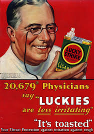

How it all started
The origins of smoking can be traced back to around 5000–3000 BC, when early agricultural practices cultivated the product in Mesoamerica and South America. Over time, the act evolved from accidental burning to intentional exploration of consumption methods. It became intertwined with shamanistic rituals, with civilizations like the Babylonians, Indians, and Chinese incorporating incense burning into religious ceremonies. In the Americas, smoking likely originated from shamanistic practices but later transitioned to recreational or social use. Tobacco and hallucinogenic substances were smoked to induce trances and commune with the spirit world. Additionally, tobacco smoke enemas were sometimes employed for respiratory stimulation.
Among Eastern North American tribes, tobacco held significant cultural and trade value, often carried in pouches and smoked in ceremonial pipes during sacred rituals or to seal agreements. Both adults and children partook in the practice, believing tobacco to be a gift from the Creator, capable of carrying thoughts and prayers to the heavens.
Beyond recreational use, tobacco served medicinal purposes, functioning as a pain reliever for ailments like earaches and toothaches. Desert Indians believed smoking could alleviate colds, especially when mixed with plants like Desert sage or Indian balsam, which were thought to be beneficial for conditions like asthma and tuberculosis.
Propaganda
Pro-cigarette propaganda, including endorsements from doctors and dentists, played a pivotal role in amplifying cigarette consumption during the mid-20th century. Leveraging the trust placed in healthcare professionals, tobacco companies strategically featured these endorsements in their advertising campaigns, creating a false sense of security and legitimacy around smoking. Through misleading claims of health benefits and emotionally manipulative messaging, smoking was portrayed as glamorous and sophisticated, aligning it with desirable social traits. Crucially, tobacco companies suppressed and distorted scientific evidence linking smoking to severe health risks, fostering a culture where smoking became socially acceptable and even aspirational. This pervasive propaganda normalized smoking, shaping cultural norms and perpetuating the myth of its harmlessness for decades. Only with increased awareness of the true health consequences and subsequent regulation did the influence of pro-cigarette propaganda begin to wane, marking a crucial turning point in public perception and policy regarding tobacco use.